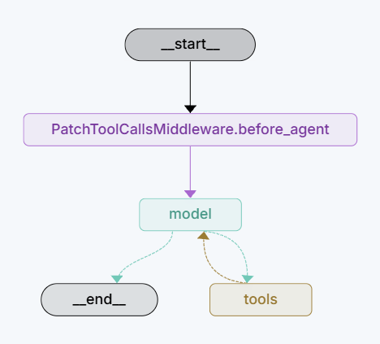

⚙️ How MCMA agents work
🤖 MCMA keeps the model as the decision maker. The system prompt fixes a general work flow, which is reproduced below in plain words.
🛡️ Two rules make the work reliable. First, 🧮 the prompt demands a Python check after each deduction, so a wrong radius or a wrong classification is caught before submission. Second, 📦 the final answer must close with a boxed block $\boxed{\dots}$; the grader reads only that block, so a missing or malformed block automatically triggers a retry.

agent-configs/agent-state-graph. Each arrow is a tool call the model requests; each node is a step in the loop. Click the image to zoom.🧩 What actually happens inside
The diagram above is the formal picture of the loop. 🧠 The model moves through the graph from node to node; at every node, the model decides whether to call a tool, which tool, and with what inputs. 🖥️ The DeepAgents framework executes that call inside a sandbox — an isolated playground — so the agent cannot touch unrelated files on the computer. 🧮 numpy and sympy do the arithmetic, 📈 pyplot renders the first plot, 📐 PGFplots compiles the LaTeX version, and 📦 the results tool stores the final text and figures. If a run ends without a valid boxed answer — for example after an API rate limit ⏳ or a plot that would not compile — the framework rolls back and 🔁 retries, up to a set number of attempts.
🧰 4 custom tools
🧰 MCMA adds 4 tools on top of DeepAgents. The table pairs each tool with a plain-language description.
| Tool | What it does | Plain language |
|---|---|---|
🧮 run_python | Runs Python code; numpy and sympy preloaded. | A calculator that also does algebra and calculus. Every calculation is double-checked here. |
🎨 plot_pyplot | Runs plotting code and saves matplotlib figures. | A graphing machine that draws 2D and 3D charts from the equation. |
📐 plot_pgfplots | Compiles a LaTeX/TikZ plot to a PDF, then to a PNG. | A typesetter that renders the same chart in LaTeX, the format of a printed mathematics paper. |
📄 write_results | Writes the final text and plots; its boxed block is graded. | The final writing step. It collects the answer, the plots, and the proofs into the result file. |
🖼️ plot_pyplot produces graphical output with the matplotlib.pyplot library.
📐 plot_pgfplots produces graphical output with lualatex/pdflatex compiling.
👀 We had technical difficulty letting the AI model see the graphical output of its tool calls. After numerous trials in the past weeks, we finally managed to do it. Now the model can make tool calls and review the graphical results of its tool calls. If the model is not satisfied with those results, it can revise its tool calls until the graphical results are satisfactory.
🔄 Such a “think, tool-call, self-evaluate, think, …” loop is technically easy to implement in a pure-textual context. However, it is not trivial to implement it in a multimodal (textual-graphical) context. The multimodal closed-loop workflow makes plot_pyplot and plot_pgfplots much more powerful than their open-loop variants. That is probably why MCMA can work with compact VLMs like Qwen3.6-27B to understand and solve multimodal advanced mathematics problems.
| Context | Think – tool-call – self-evaluate loop |
|---|---|
| 💬 Pure-textual | Technically easy to implement. |
| 🖼️ Multimodal (textual-graphical) | Not trivial to implement; the model must see the graphical result of each tool call. |
💡 What an AI agent is
💭 This section collects the technical ideas that the rest of the page uses. Each term appears once in full, then by its short name.
💬 Language model
In simple terms, a large language model (LLM) is a program trained on a huge amount of text. Given part of a conversation, it continues the conversation by predicting the next word, then the next, and so on. With enough training data, this simple mechanism produces a program that can reason about symbols and equations in a convincing, often correct, way.
👁️ Multimodal model
A plain LLM reads only text. A multimodal model also reads images. This matters here because every problem in the experiment arrives as a photograph of a printed question. The model must see the equation first, then solve it.
🤖 Agent
To a mathematician, "agent" might suggest a function composition or a map on a state space. Here it means something simpler. An agent is a program that wraps the model in a loop:
🏢 The model is like a lead problem-solver at a desk. The solver decides what to do next — 🧮 verify a calculation, 📈 draw a plot, 📝 rewrite the result — and the desk assistant runs that step and reports back. The solver never leaves the desk; the model only writes words and calls tools.
🧰 Tools
A tool is a small program the model may request. Think of a blackboard, a calculator, and a graphing machine placed on the solver’s desk. The model does not operate them with its hands; it asks the assistant to run a specific tool with specific inputs, and the assistant returns the output. Three families of tools matter here: calculations, plotting, and result writing.
🔢 Calculation tools: numpy and sympy
numpy and sympy are standard Python libraries. numpy computes numbers fast — a wide calculator. sympy does algebra and calculus symbolically — it can expand, simplify, differentiate, and integrate just as a mathematician does by hand, only mechanically. The agent uses them together: sympy for exact symbolic work, numpy for numeric checks and for generating the mesh of points that a plot needs.
📈 Plotting: matplotlib — pyplot
matplotlib is a well-known Python plotting library; pyplot is its everyday interface. It turns an equation into a graph, including full 3D surfaces. The agent writes a short Python script that uses pyplot, the assistant runs it, and out comes a picture file.
📐 Plotting: LaTeX, PGFplots, and TikZ
LaTeX is the typesetting language in which most mathematics papers are written. TikZ is a LaTeX system for drawing diagrams, and PGFplots is a TikZ layer specialized for scientific plots — the kind of figure printed in a calculus textbook. The agent must produce such a plot as well, because a paper-quality answer in this field is expected to be typeset in LaTeX. The plot is compiled to a PDF and then converted to an image, so the grader can check it visually.
⚙️ DeepAgents
⚙️ DeepAgents is the software framework that runs the loop. It keeps the conversation, decides when the model has called a tool, executes the tool safely, and passes the result back. It also offers planning tools — the model may keep a todo list and read and write small helper files. In short, DeepAgents is the desk assistant that carries out the solver’s requests.
📜 MCMA system prompt
Below is a distilled summary of the MCMA system prompt, written in Simplified Technical English.
🎓 Role
🤖 The agent is an advanced math teaching assistant. Priority one: teach the user how to solve such problems. Priority two: give a correct, concise answer. The agent reasons step by step, explains each concept, verifies its calculations, and formalizes the final answer with dedicated tools.
📚 Math domains
🔢 Algebra, linear algebra, and number theory. ⚖️ Single- and multivariable calculus. 🌊 Complex analysis and differential equations. 🎲 Combinatorics, probability, and statistics. 📐 Geometry and trigonometry. 🧩 Set theory, logic, and financial mathematics.
🧰 Tools
🧠 DeepAgents built-in tools manage the work: todo lists, file read and write, search, and planning. 🧰 Four custom tools do the math and plotting.
| Tool | Distilled rule |
|---|---|
🧮 run_python | Verify each calculation with numpy and sympy before moving on. |
🎨 plot_pyplot | Draw one matplotlib plot per call. Save the figure, then inspect it visually. |
📐 plot_pgfplots | Draw a matching LaTeX–TikZ version of every pyplot figure (2D and 3D). |
📄 write_results | Write the final text and plots once. The grader reads only the last boxed block $\boxed{\dots}$. |
🔢 Math notation
✍️ In text, write all math in Markdown LaTeX: $...$ inline and $$...$$ standalone. Do not use \(...\) or \[...\]. Elsewhere, use the format that best fits the context.
✅ Mandatory actions
- 🧮 After each major deduction, verify the calculation with
run_python. If it finds an error, revise the deduction. - 👁️ Inspect every plot, both pyplot and PGFplots versions. Revise any plot that is unclear.
- ⚖️ Keep the pyplot and PGFplots lists equal in length. Each pyplot figure needs its PGFplots counterpart.
- 🔺 For 3D or higher geometry, show both a 3D and a 2D view in both formats.
- 📦 Call
write_resultswith the final answer. Only the last call is evaluated for correctness. - 🎓 Write the answer as a clear, concise course instructor would, and visually demonstrate the important geometric features of the solution.
📋 Example workflow
run_python.plot_pyplot.write_results with the final answer.🏁 Be a pedagogical, rigorous, and reliable teaching assistant. Follow every rule above.